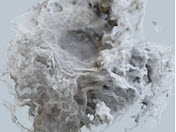

|  | |
| 噪波模式：标量（默认） | 噪波模式：向量 |
本简短教程演示了与体积置换结合使用时归一化 Arnold 噪波着色器的工作流。在本示例中，我们有一个烟 VDB，我们想使用体积置换增加其细节。
要下载各种 VDB 体积，请单击此处。
将 standard_volume 着色器指定给体积。
创建一个 Arnold 噪波着色器并将其连接到 standard_volume 着色器的“置换”(Displacement)参数。
这似乎很简单，但是存在一个问题。体积已偏移至一侧并且显示的是仅一个方向上的置换。
噪波仅在一个方向上置换
发生这种情况是因为噪波着色器的工作范围是从 0 到 1。烟是体积对象，而不是平面对象，因此我们需要将纹理从 0-1 重映射到 -1 - 1。
使用范围着色器前后
一般情况下，应该避免添加另一个着色器，尤其是在体积上下文中。
噪波 -> VectorMap -> 体积置换(Noise -> VectorMap -> Volume Displacement)
非常感谢 Slava Sych 为本教程提供的帮助。